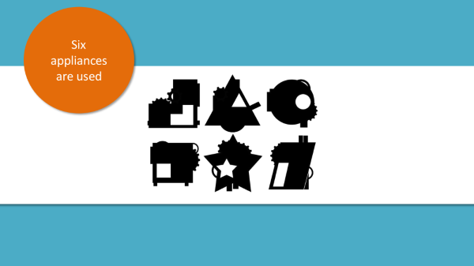
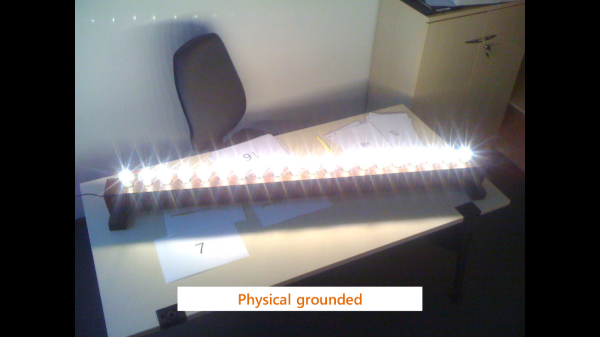
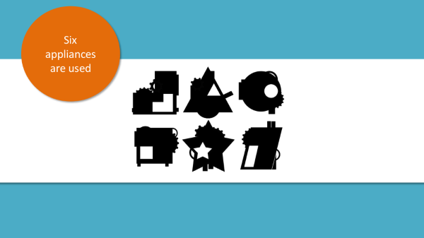
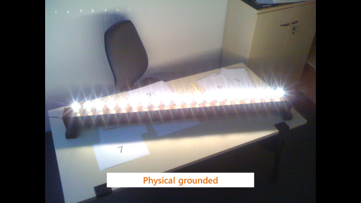
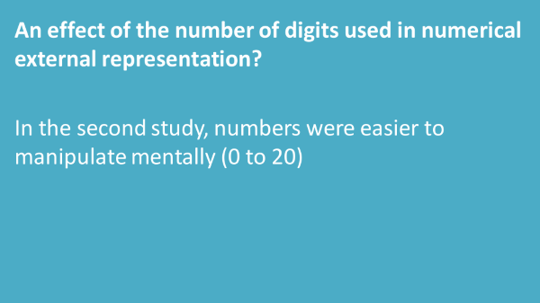
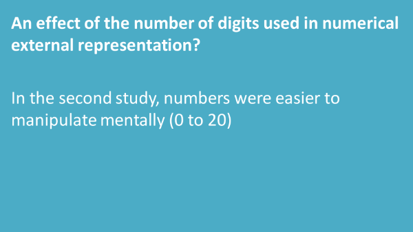

Martin Galilée
Ingénieur recherche interdisciplinaire
Sciences de la soutenabilité et au-delà
Mon parcours m'a apporté beaucoup d'expériences différentes, dans différents domaines. Doctorant chargé de cours, programmeur d'expériences de psychologie aux USA, médiateur scientifique auprès de jeunes curieux, journaliste du monde académique, spécialiste de la cognition de la communication visuelle...
Je mets maintenant mes connaissances et expériences au profit des sciences en tant qu'ingénieur recherche, particulièrement en sciences de la soutenabilité et pour le soutien à l'interdisciplinarité.
Télécharger mon CV 



 
